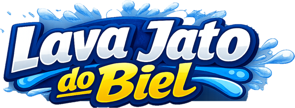

O que é novo
- Logo refeita com fundo transparente, pronta pra panfleto, banner e camiseta.
- Todas as artes numa aba só, Imagens, pra abrir grande e mandar pro Biel.
As artes

A logo
A logo refeita, com fundo transparente: serve em panfleto, banner, foto de perfil e camiseta.
- No app: Projetinhos > Lava Jato do Biel > aba Imagens. Tocar na imagem abre grande pra salvar ou mandar.
Panfleto e banners
Na mesma aba ficam o panfleto, o banner com a tabela de preços e o banner faixa, cada um com a legenda do que é e da data.
- Mandar pro Biel: abre a imagem grande e compartilha pelo WhatsApp.
Site
Se precisar de site
A ideia é um site de uma página, igual ao da Azul e ao do Sandro: os serviços e preços do panfleto e um botão direto pro WhatsApp do Biel. Por enquanto não tem.
- Antes de fazer, confirmar com o Biel o WhatsApp, o horário e se pode publicar o endereço.
- Essa conversa com o Biel e a montagem do site estão na aba A fazer do projeto.
Quando o site existir, esta página ganha os prints dele, igual à documentação da Azul e do Sandro.